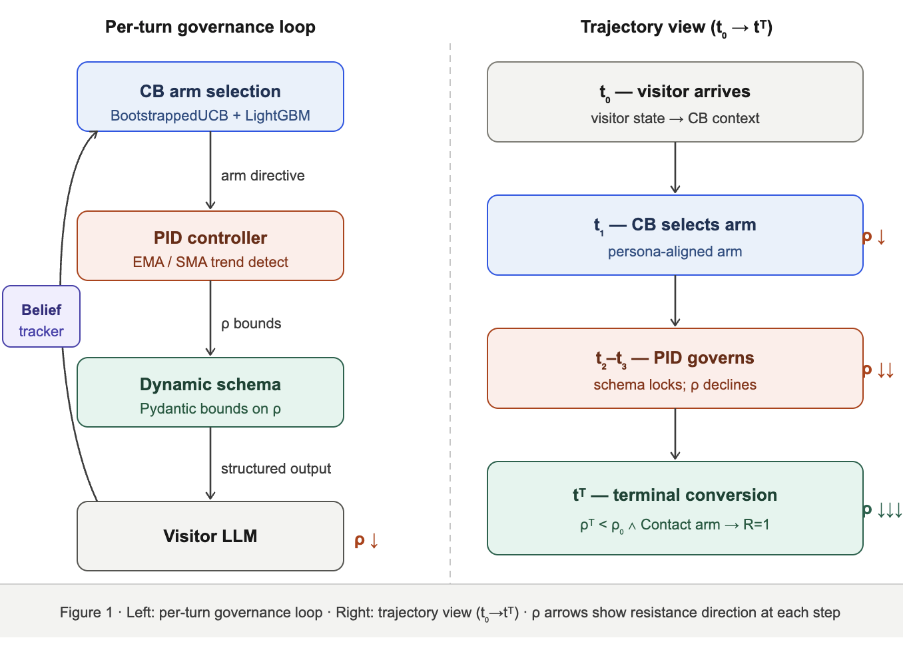

Georgia Institute of Technology · Huge Inc.
Contents
Abstract
Classical multi-agent reinforcement learning composes a shared policy through joint reward optimization. LLM agents lack this foundation: deployed in multi-agent settings with structurally opposed objectives, they drift toward attractor states rather than converging to cooperative equilibria. This paper asks whether a control theory-informed governance layer can substitute for the missing goal function, steering two LLM agents toward a jointly optimal outcome.
We propose the Experience Orchestrator (EO), which explores a simulated financial services environment where a site agent guides a visitor toward a "speak with financial advisor" digital action while the visitor agent maintains realistic resistance given its persona. EO governs the joint trajectory through Contextual Bandit (CB) action selection calibrated from real-world web session analytics, PID-controlled schema constraints, and POMDP belief tracking.
Across a 60,000-simulation factorial evaluation, the full system achieves a +32 point lift in high-intent advisor contact rate (78.1% vs. 46.1%) over an LLM control guided purely with a system prompt. Critically, CB variant selection accounts for 97% of between-factor outcome variance versus 3% for friction model choice, confirming that the governance policy, not environmental initial conditions, determines where trajectories end up.
The challenge of coordinating independent LLM agents toward a shared objective has emerged as one of the most pressing problems in applied AI. Despite rapid adoption of multi-agent systems across business domains, the fundamental question of how to make structurally independent agents collaborate effectively remains largely unsolved.
Classical RL agents optimize an explicit reward function; the goal is mathematically encoded in every gradient update. LLM agents have no equivalent. Their behavior is shaped by a prompt, which specifies intent in natural language but provides no formal optimization target. When two LLM agents with structurally opposed objectives interact across multiple turns, the absence of a shared goal function produces not competition but collapse: neither agent has a mechanism to recognize the joint trajectory is suboptimal, and neither has a gradient signal to correct it.
The result is convergence toward agreement regardless of initial conditions. This is not a model failure; it is a system architecture failure. There is no goal function to enforce, so there is no corrective force to apply.
Van Gelder's Dynamical Hypothesis establishes that intelligent agents are best understood as dynamical systems evolving through state space over time. Kelso's coordination dynamics formalizes the phenomenology: healthy cognitive systems navigate a rich attractor landscape, moving fluidly between basins in response to environmental input. Pathological behavior is precisely what happens when a system becomes trapped — when the gradient landscape provides no escape from a fixed point that is locally stable but globally suboptimal.
Multi-agent LLM systems exhibit the same behavior. The governance question is therefore a dynamical systems question: what external force, applied to the joint trajectory, is sufficient to steer the system away from degenerate attractors and toward the cooperative equilibrium?
The Experience Orchestrator (EO) applies classical control theory as the substitute for the missing goal function. The experiment space is a financial services website, where a human visitor browses for retirement planning information and encounters an LLM-powered chatbot. The site agent seeks to guide the visitor toward scheduling a consultation with a financial advisor, while the visitor maintains realistic skepticism based on their assigned persona. EO governs the joint trajectory through three mechanisms: a PID controller that enforces behavioral consistency in real time; a POMDP belief tracker that maintains a probabilistic model of visitor intent; and a contextual bandit that selects the optimal content arm at each decision point.

We measure three things: Lift — whether the governed system achieves substantially higher advisor contact rates than a naive LLM baseline. Policy dominance — whether CB variant selection explains substantially more outcome variance than environmental factors. Trajectory quality — whether governed conversation trajectories exhibit qualitatively different dynamics than ungoverned baselines.
The EO system instantiates a specific class of multi-agent problem we term adversarial-adjacent: the two agents have structurally opposed turn-level objectives (conversion vs. resistance), but the system is designed around the hypothesis that governance can steer the joint trajectory toward a cooperative terminal state. This is distinct from zero-sum MARL (where one agent's gain is the other's loss) and from fully cooperative MARL (where agents share a reward function). Cooperation is not assumed; it is the empirical question.
We conducted 60,425 visitor sessions entirely through simulation. A visitor agent — instantiated with one of six behavioral personas drawn from real-world audience research — navigates a series of pages on a financial services website. At the end of their browsing journey, each visitor reaches a "Find an Advisor" decision boundary page where a site agent (LLM-powered chatbot) begins a structured dialogue. The governance layer observes both agents and applies corrective force to the joint trajectory.
digital_native
+68.7pp lift
Self-directed, skeptical. Control LLM: 0.6%. Governance closes the gap entirely.
fee_hawk
+62.8pp lift
Cost-focused, resistant to sales pressure. Control LLM: 1.0%.
dashboard_exile
+0.1pp lift
Near-alignment. Control LLM already achieves 90% — governance adds marginal lift.
legacy_loyalist
+3.2pp lift
Near-alignment. Control LLM's empathetic defaults are sufficient.
stranded_saver
+3.9pp lift
Near-alignment. Highest absolute conversion rate: 98.6% under governance.
grieving_proxy
−24.5pp
Critical exception. Governance performs worse — emotionally sensitive persona requires tailored handling outside current arm design.
Visitor resistance $\rho \in [0,1]$ represents the visitor agent's disposition toward advisor contact:
with $\mathbb{E}[\rho | \text{GREEN}] = 0.20$, $\mathbb{E}[\rho | \text{YELLOW}] = 0.50$, $\mathbb{E}[\rho | \text{RED}] = 0.80$.
The shaped reward solves the sparse reward problem at real-world conversion rates near 10%:
where $-\Delta\rho_t$ rewards resistance decline, $-\Delta H_t$ rewards intent disambiguation, $1/t$ is an efficiency bonus, and $R_{\text{terminal}} \in \{1.0, 0.4, 0.2, 0.0, -0.2\}$ encodes terminal outcome quality. Weights: $w_\rho=0.3$, $w_H=0.2$, $w_{\text{eff}}=0.1$, $w_{\text{conv}}=0.4$.
Because the visitor's true intent is hidden from the site agent, the governance layer maintains a probabilistic belief about what the visitor actually wants. The belief state $b_t$ is a Dirichlet distribution over four intent categories $\mathcal{I} = \{\text{browse, compare, purchase, support}\}$:
where $c_t$ is an observation count vector derived from keyword signals in the visitor's message. Entropy $H(b_t)$ decreases as the system learns about visitor intent; this entropy signal feeds into PID gain scheduling.
The PID controller observes the gap between the visitor's current resistance and a target value, accumulates evidence of persistent stagnation across multiple turns, and applies corrective force through the schema constraint system. The three terms correspond to three complementary correction strategies: the proportional term responds to current deviation; the integral term corrects for persistent drift; and the derivative term provides anticipatory correction when the trajectory is accelerating toward an attractor state.
Gain scheduling adapts the proportional gain based on belief entropy and conversation age:
Trend detection uses two complementary moving averages. EMA detects directional trend; SMA detects stagnation. Stagnation is flagged when $|\text{SMA}_t - \text{SMA}_{t-1}| < 0.3$, triggering the Stagnant Loop escape mechanism.
The PID output determines the visitor's resistance score bounds for the current turn on an integer scale from 1 (fully open) to 5 (complete refusal):
where $\Delta = \text{clip}(|I_t| \times 2.0,\; \Delta_{\min},\; \Delta_{\max})$. The schema is realized as a dynamically constructed Pydantic BaseModel passed to the LLM's with_structured_output().
+32pp
Lift in advisor contact rate
(78.1% vs. 46.1%)
97%
Outcome variance explained by CB governance policy
60,425
Simulations across 8 friction models, 6 personas
Table 1. Primary outcomes: V4_SemRush vs. Control LLM. Advisor-contact metric: terminal = Contact AND $\rho_\text{final} < 0.40$, traffic-weighted.
| Metric | V4_SemRush | Control LLM |
|---|---|---|
| Advisor contact rate (traffic-wtd.) | 78.1% | 46.1% |
| 95% CI | [76.8, 79.4] | [44.6, 47.6] |
| Arm alignment | 73% | 48% |
| Lift vs. Control LLM | +32.0 pp (p < 0.001) | |
Lift (H1). V4_SemRush achieves a high-intent advisor contact rate of 78.1% versus 46.1% for Control LLM — a +32.0 point lift (Fisher's exact, $p < 0.001$). The governed system reaches 90% of the clairvoyant Oracle ceiling, confirming that governance, not arm luck, drives the result.
Policy dominance (H2). Two-way ANOVA across 60,425 simulations attributes 97% of between-factor outcome variance to CB variant selection and only 3% to friction model choice. The governing policy overwhelmingly determines where trajectories end up, regardless of environmental starting conditions. This is the paper's strongest scientific claim.
Trajectory quality (H3). Under governance, arm selection aligns to persona reward priors and resistance declines monotonically. Without governance, arm mismatch escalates resistance until the dead-end detection mechanism terminates the session.
Table 2. Conversation snapshot (fee_hawk): governed vs. ungoverned at the critical Turn 2 divergence point. The visitor has just said they want to research independently. V4_SemRush listens and pivots; Control LLM ignores the signal and pitches advisor contact again.
| V4_SemRush (Governed) | Control LLM (Ungoverned) | |
|---|---|---|
| Visitor (T1): Searches "retirement." ρ = 0.18 | ||
| Arm | Math | Contact |
| Response | "Interested in planning? Explore our retirement tools and resources, or speak with an advisor." | "I'd recommend speaking with one of our certified advisors. Can I help schedule a consultation?" |
| Visitor (T2): "I'd rather research this myself first." [explicit resistance signal] | ||
| Arm | Questions | Contact (again) |
| ρ | 0.14 ↓ | 0.41 ↑ |
| Response | "Looking for account types (IRAs, 401k), investment strategies, or planning calculators?" Adapts to stated intent. | "Our advisors answer your specific questions. Shall I book a 15-min call?" Ignores stated intent. |
| ρ final | 0.08 — Conversion | 0.62 — No conversion |
Policy composition without joint training. The CB policy produces coordinated behavior from agents that do not share a reward function. Effective multi-agent collaboration does not require re-architecting the agents or retraining them jointly. It requires building a better governor. Organizations deploying multi-agent systems today do not need to rebuild their agent stack. They need to invest in the governance layer that sits above it.
The governor as the dominant variance source. The 97% variance attribution to CB variant choice means the quality of the governing policy — not the sophistication of individual agents or the friction characteristics of the environment — is the primary determinant of system performance. System designers should invest in governance policy quality before optimizing agent-level behavior.
Control theory as a generalizable LLM governance paradigm. PID control is theoretically warranted for POMDP environments because its inductive biases resist overfitting to simulator dynamics. The EO results provide empirical validation of this property in an LLM setting. Classical control theory provides a rich toolkit — adaptive control, model predictive control, robust control — that has not yet been systematically applied to LLM multi-agent governance.
Sycophantic Collapse
The visitor agent converges toward agreement without genuine engagement. More dangerous in production because it produces false-positive conversion signals. Detected by the $\rho_\text{final} < 0.40$ resistance gate.
Stagnant Loop
Resistance neither rises nor falls — neither agent provides sufficient gradient for the trajectory to escape a local equilibrium. In production customer-service deployments, this manifests as conversations that are polite but never resolve. The PID integral term corrects this.
Arm Fixation
The CB concentrates on a single arm regardless of persona state — an over-exploitation failure that mirrors the narrowing of messaging strategy seen in poorly tuned A/B testing systems.
The EO architecture enforces behavioral consistency from outside the model through schema constraints at the structured output layer. This positions EO as one side of a two-sided bracket on the reward signal reliability problem. Attention Fine-Tuning (AFT) approaches the same problem from the endogenous direction, deriving a self-supervised reward signal from decoder cross-attention activations. Both systems reach the same conclusion: the signal that matters is grounded in what the model is actually doing, not what it reports. The natural synthesis — replacing the PID heuristic with a HACA-based internal reward — is the open experiment that bridges these two research lines.
We presented the Experience Orchestrator, demonstrating that a control-theoretic governance layer can substitute for the missing goal function in a multi-agent LLM system, steering two agents with structurally differing objectives toward a jointly optimal outcome. The full system achieves a +32.0 point lift in high-intent advisor contact rate, with CB variant selection accounting for 97% of between-factor variance across a 60,000+ simulation factorial evaluation — the first empirical demonstration of adversarial-adjacent MARL dynamics in an LLM agent setting governed by classical control theory.
All findings are conditional on LLM simulation. The visitor agent is another language model, not a human. Real visitors are far more unpredictable: they do not maintain consistent persona behavior across a session, they respond to conversational subtext that a structured schema cannot capture, and they may escalate, disengage, or behave in ways that fall entirely outside the six archetypes modeled here. Careful human-in-the-loop testing will be required before the PID gains and schema bounds can be trusted in a live environment.
Live A/B validation. Running V4_SemRush against real traffic is the critical next step, and will determine how much of the simulation-measured lift survives contact with real human unpredictability.
HACA-Based Internal Reward Signal. The companion paper demonstrates Attention Fine-Tuning (AFT), a post-training framework that derives a self-supervised reward signal from decoder cross-attention dynamics. Augmenting the EO PID heuristic with a HACA-based internal reward would produce endogenously grounded governance — the convergence of exogenous control and endogenous reward shaping.
Domain generalization. The adversarial-adjacent MARL framing is not specific to financial services. Healthcare consultations, enterprise software sales, HR recruiting conversations, and technical support interactions all exhibit the same structural pattern: one agent seeking to guide, one maintaining resistance, and a shared terminal outcome neither can reach alone.
POMCP Lookahead Planning. Replacing the myopic CB with POMCP lookahead planning that simulates 3-5 turns ahead would extend the governance horizon and may produce further lift by anticipating resistance escalation before it becomes entrenched.
Beta encodes the compositional reality of financial-services traffic: real visitor populations segment into intent tiers rather than arriving uniformly persuadable. GREEN ~ Beta(2,8), YELLOW ~ Beta(5,5), and RED ~ Beta(8,2) are chosen for their shapes as well as their means. Beta(2,8) concentrates probability mass near zero — a GREEN visitor is not merely "low-resistance on average" but tightly clustered at the low end with a short tail of borderline cases.
The $\rho_\text{final} < 0.40$ resistance gate in Definition B sits meaningfully below $\mathbb{E}[\rho|\text{YELLOW}] = 0.50$ — a final resistance below 0.40 cannot be dismissed as the noise of a neutral visitor politely agreeing. It represents a genuine downward shift in disposition. The +32.0pp lift should be read as "additional percentage points of traffic that both selected Contact and crossed a principled resistance-decline gate."
The PID controller is the same family of feedback mechanism that holds a car at cruise speed. At every turn it measures the gap between the visitor's current resistance $\rho_t$ and a target $\rho_\text{target}$, and applies three complementary corrective forces. The integral term is responsible for escaping the Stagnant Loop attractor: if resistance has plateaued far from target, the accumulating sum grows until it eventually dominates the output and forces a structural correction.
Worked example. Consider a YELLOW visitor four turns into a stagnating conversation, with $\rho_\text{target} = 0.15$ and recent resistance history $[0.55, 0.52, 0.50, 0.49]$. At turn 4 with $K_p = 1.0$, $K_i = 0.2$, $K_d = 0.5$:
The integral contribution ($-0.292$) is nearly as large as the proportional contribution ($-0.340$), correctly reflecting that resistance has been high for four turns — not merely that it is high right now. The resulting schema compression $\Delta = \text{clip}(0.627 \times 2.0,\; 1,\; 2) = 1.254$ translates this into a meaningfully tighter bound on the visitor's next self-reported resistance, forcing the trajectory to move.